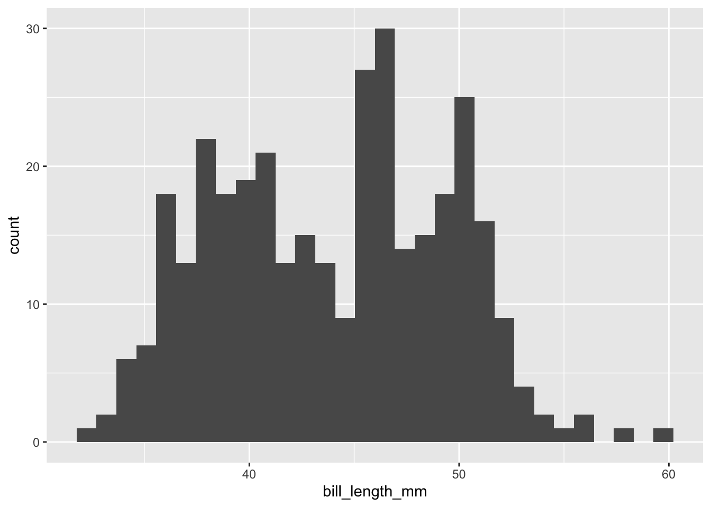
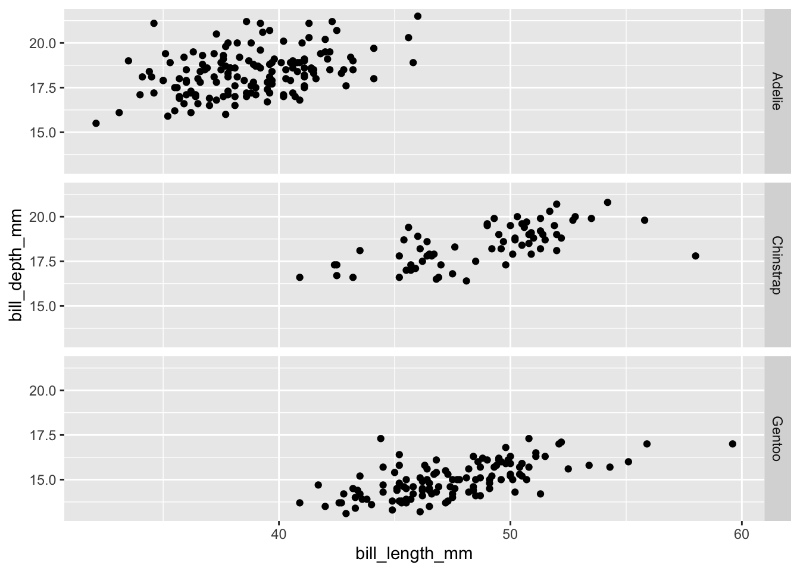

# this is a comment, use it to explain your code for a human to understand
# each new line of a comment needs a new `#`11 R functions quick reference sheet
11.1 Goals
- Help make your own quick reference sheet of the most important R functions we’ve gone over so far
This lab will be a little different from the others. In the Learning the Tools section we’ll take a guided tour of the start of a quick reference sheet. Then in the Questions section, you’ll be tasked with completing the reference sheet.
11.2 Learning the Tools
After completing this lab you will have a quick reference guide for the following functions/commands:
“Base R” stuff (i.e. you don’t need to load a package for these functions/commands)
#library<-c_______________________[q1]:mean____________________[q2]sd______________________[q3]sum_____________________[q4]lengthdata.framenrow____________________[q5]headView____________________[q6]$_______________________[q7]==<=______________________[q8]<_______________________[q9]>=______________________[q10]>_______________________[q11]!=______________________[q12]subset[sample__________________[q13]
Functions from package dplyr
group_bysummarize
Functions from package ggplot2
ggplotaesgeom_pointgeom_bar________________[q14]geom_boxplot____________[q15]geom_histogram__________[q16]varsfacet_gridscale_color_viridis_cscale_color_viridis_d___[q17]
Functions and commands that have [qXYZ] next to them will be saved for you as questions, all the rest we will cover together here in Learning the Tools. Let’s dive in!
11.2.1 #
Definition: The special “comment” character, this charachter tells R to ignore what you’re typing, those words are for human eyes only
Examples:
11.2.2 library
Definition: Use library to load a package, this allows you to use the functions defined by that package, and any data contained in that package.
Examples:
# load a package for its data
library(palmerpenguins)
# now we can, e.g., use the `penguins` data from *palmerpenguins*
# in a plot
# first load the package *ggplot2*
library(ggplot2)
ggplot(penguins, aes(x = bill_length_mm)) +
geom_histogram()
11.2.3 <-
Definition: The special “assignment” character, tells R to assign the stuff on the right hand side to the name on the left hand side
Examples:
any_name_you_want <- "anything you want, like this string of characters"
any_name_you_want[1] "anything you want, like this string of characters"11.2.4 :
Definition: A quick way to make a vector of consecutive integers
Examples:
x <- 1:3
x[1] 1 2 311.2.5 length
Definition: Tells you the length of a vector
Examples:
y <- c("a", "b", "c")
length(y)[1] 311.2.6 data.frame
Definition: A function to create a data.frame object. You tell it what columns you want by passing the names and values of the columns as arguments
Examples:
# note: we will make columns called "group" and "measurement" and to give
# values to those columns we use the equal size (=), **NOT** the
# assignment character (<-)
my_data <- data.frame(group = c("a", "b", "c"),
measurement = 1:3)
my_data group measurement
1 a 1
2 b 2
3 c 311.2.7 head
Definition: Look at the first few rows a data.frame
Examples:
my_data <- data.frame(group = c("a", "b", "c"),
measurement = 1:3)
# with this short data.frame `head` will just print all the rows,
# for a longer data.frame, only the first 6 rows will be printed
head(my_data) group measurement
1 a 1
2 b 2
3 c 311.2.8 ==
Definition: Asks a “yes/no” question: does the object on the left hand size equal the object on the right hand side, yes (TRUE) or no (FALSE)?
Examples:
1 == 2[1] FALSE# also works for each element of vectors, but the vectors need to be the
# same length, and be the same type (e.g. both numeric)
z <- c(1, 5, 7)
w <- c(1, 2, 7)
z == w[1] TRUE FALSE TRUE11.2.9 &
Definition: Combines “TRUE/FALSE” questions with “and”. Like “is this TRUE, and this TRUE?” If either is not true, the & gives us FALSE
Examples:
my_data <- data.frame(group = c("a", "b", "c"),
measurement = 1:3)
my_data$group == "a" & my_data$measurement <= 2[1] TRUE FALSE FALSE11.2.10 |
Definition: Combines “TRUE/FALSE” questions with “or”. Like “is this TRUE, or this TRUE?” If either is true, the | gives us TRUE
Examples:
my_data <- data.frame(group = c("a", "b", "c"),
measurement = 1:3)
my_data$group == "a" | my_data$measurement <= 2[1] TRUE TRUE FALSE11.2.11 is.na
Definition: Asks a “TRUE/FALSE” question: is a value missing (NA) or not?
Examples:
my_values <- c(1.1, 4.3, NA)
is.na(my_values)[1] FALSE FALSE TRUE11.2.12 subset
Definition: Returns a subset of a data.frame based on some condition being met. The condition is usually whether the values in one of the vectors meet some kind of criterion
Examples:
my_data <- data.frame(group = c("a", "b", "c"),
measurement = 1:3)
my_data_sub <- subset(my_data, my_data$measurement <= 2)
my_data_sub group measurement
1 a 1
2 b 211.2.13 [
Definition: Called the “square bracket” this command is used to extract specific elements of a vector or data.frame
Examples:
y <- c("a", "b", "c")
y[1:2][1] "a" "b"11.2.14 group_by
Definition: A function from the dplyr package, this function tells R to split a data.frame into groups according to one or more of the columns in the data.frame. This function is almost always used in combination with summarize. We will show an example of both working together
11.2.15 summarize
Definition: A function provided by the package dyplyr to calculate a statistic from the column or columns of a data.frame. This function is almost always used in combination with group_by
Examples:
# load package to get access to `penguins` data set
library(palmerpenguins)
# load package to get access to functions
library(dplyr)
# group the penguins by their species ID
penguis_by_species <- group_by(penguins, species)
# calculate a statistic like the mean bill length
# notice that we're telling the `mean` function to ignore NA values by
# specifying `na.rm = TRUE`
bill_by_species <- summarize(penguis_by_species,
mean_length = mean(bill_length_mm, na.rm = TRUE))11.2.16 ggplot
Definition: The main function from package ggplot2 for setting up a plot. This function doesn’t make the plot itself, but it tells R what data.frame to use and which columns from that data.frame will go on the x and y axes. The x and y axes are set up wit the aes function. We will show an example after we define aes and the geom_* family of functions
11.2.17 aes
Definition: The function from package ggplot2 that tells R what data will go across the x and y axes
11.2.18 geom_point
Definition: The function from package ggplot2 that draws a scatter plot of points
Examples:
library(palmerpenguins)
library(ggplot2)
ggplot(penguins, aes(x = bill_length_mm, y = bill_depth_mm)) +
geom_point()
11.2.19 vars
Definition: A function from package ggplot2 that is used to refer to a specific column when doing complex plotting like adding facets or colors that display information from the data. This will be more clear with the example from the facet_grid function
11.2.20 facet_grid
Definition: A function from package ggplot2 that allows us to make multiple plots all at once based on a categorical column in our data set (each unique category in the data will get its own plot)
Examples:
library(palmerpenguins)
library(ggplot2)
ggplot(penguins, aes(x = bill_length_mm, y = bill_depth_mm)) +
geom_point() +
facet_grid(vars(species)) # notice that we have to use `vars` here
11.2.21 scale_color_viridis_c
Definition: A function from package ggplot2 that creates a color scale corresponding to a continuous variable. The “viridis” color palette is a very useful color scale because is very well aligned to how humans perceive color changes
Examples:
library(palmerpenguins)
library(ggplot2)
ggplot(penguins, aes(x = bill_length_mm, y = bill_depth_mm,
color = bill_length_mm)) +
geom_point() +
scale_color_viridis_c()
# note that the above example doesn't make efficient use of color because
# the color scale simply shows the same info as the x axis, a better use
# of color would be to show a third data dimension like this:
ggplot(penguins, aes(x = bill_length_mm, y = bill_depth_mm,
color = body_mass_g)) +
geom_point() +
scale_color_viridis_c()
11.3 Questions
Now it’s your turn! In the reprot.R script, create a reference guide for yourself following the same format, like this:
## <function name>
## **definition:** <write your definition here>
## **examples:**
<write some R code here giving examples>
# <use comments to help explain your examples>The report.R script will already be formatted for you
Here’s the functions you’ll need to define and give examples for:
cmeansdsumnrowView$<=<>=>!=samplegeom_bargeom_boxplotgeom_histogramscale_color_viridis_d